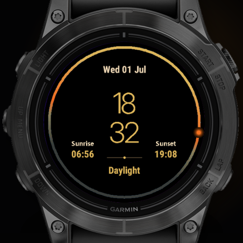
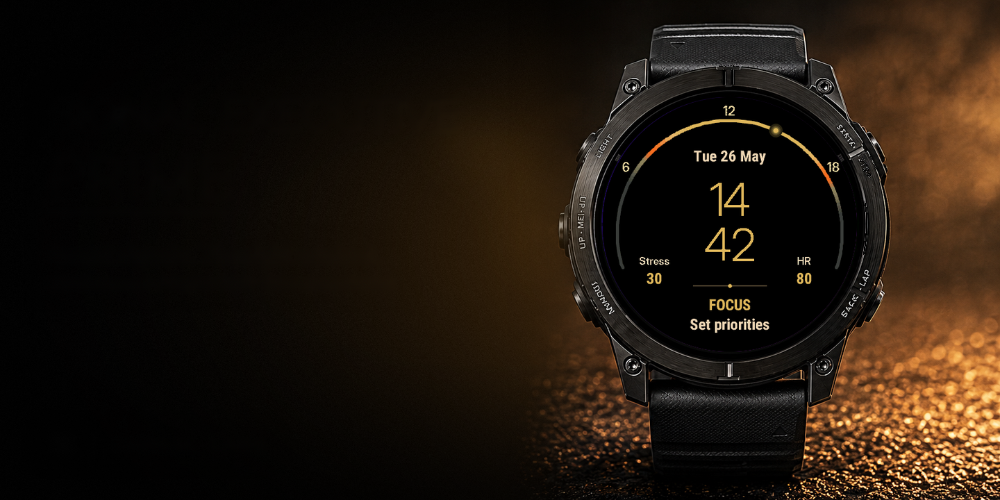
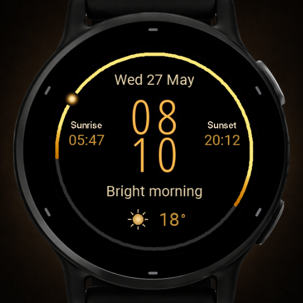
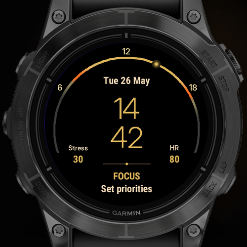
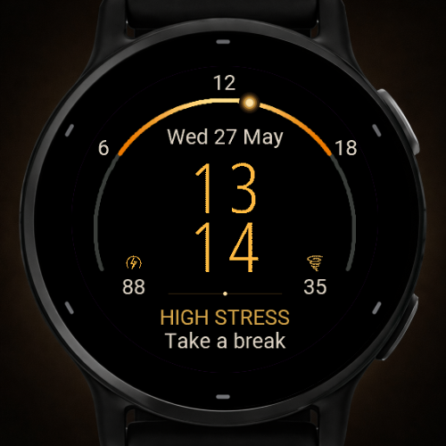

$4.99 USD
Signal Horizon PRIME
Smart weather signals, adaptive data fields and tomorrow’s outlook, built around a live daylight arc.
Get Prime
Garmin Connect IQ watch faces
Premium Garmin watch faces that turn wearable data into meaningful daily signals.
Intelligent context. Refined AMOLED design. One glance.
Free watch faces · One-time Prime purchase · No subscription
Experience the rhythm of daylight and the conditions around you.

$4.99 USD
Smart weather signals, adaptive data fields and tomorrow’s outlook, built around a live daylight arc.
Get Prime
Free
A live daylight arc, sunrise and sunset times, and atmospheric weather context.
Download freeHorizon shows you the conditions. Horizon Prime brings them into context.
| Horizon | Horizon PRIME | |
|---|---|---|
| Weather experience | Atmospheric context | Smart reactive signals |
| Data fields | Sunrise & sunset | Adapt to each signal |
| Environmental insights | Current conditions | UV, rain, wind, humidity & more |
| Tomorrow’s outlook | — | Forecast signals |
| Visual experience | Signature design | Three premium themes |
| Free | $4.99 USD | |
| Free to download | One-time purchase. No subscription. | |
| Download free | Get Prime |
Understand your energy, activity and daily rhythm.

$4.99 USD
Live signals and adaptive data fields put health, activity, weather and recovery into context.
Get Prime
Free
Body Battery, stress and essential daily signals in one clean, glanceable interface.
Download freeExecutive shows what matters. Executive Prime adapts to what matters now.
| Executive | Executive PRIME | |
|---|---|---|
| Daily signals | Essential daily signals | Live signal carousel |
| Data fields | Body Battery & stress | Adapt to each signal |
| Daily context | Energy & stress | Health, weather, activity & recovery |
| Visual experience | Signature design | Three premium themes |
| Time layout | Vertical | Vertical or horizontal |
| Interaction | Standard | Tap to advance & Quiet Mode |
| Free | $4.99 USD | |
| Free to download | One-time purchase. No subscription. | |
| Download free | Get Prime |
Regional pricing may vary.
Signal Labs
Signal Labs creates premium Garmin watch faces that turn data into meaningful context, without overwhelming the display.
Check Compatible Devices on the Connect IQ listing for the face you want.
Free covers the daily essentials. Prime adds a richer rotating signal display, adaptive fields and more theme options. See the collection comparison for details.
Yes. Prime is a one-time purchase through Connect IQ. Regional pricing may vary.
In the Connect IQ Store app, choose your watch, open the watch face listing and select Install. Accept any required permissions and sync your watch.
In the Connect IQ Store app, open Device, then My Watch Faces. Select your face, open Settings where available, and save your changes.
Availability depends on your watch, sensor data, permissions and sync. Weather also depends on location and fresh conditions from Garmin.
Email signal.labs@etik.com with your watch model and the name of the watch face.